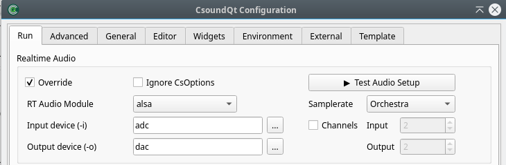

First Run and Trouble Shooting
After installing Csound and CsoundQt, start CsoundQt. You will see an editor with different tabs.

Run Example
Navigate to the Hello World example in the built-in Getting Started tutorial of CsoundQt:

After this file is loaded, push the Run Csound button top left:

You should now hear one second of a 440 Hz sine tone.
Trouble Shooting
But what if not? Some tips here; more later.
- Did you really install Csound first, and then CsoundQt? Otherwise CsoundQt can not call the Csound audio engine.
- Look at the console. (If it is not visible, go to View > Output Console.) Is there any error message which makes sense to you?
- Open the Configuration panel by clicking on the button in the toolbar. Look at the first tab which is called Run:

In the Realtime Audio section, you should see an audio driver selected. If this field is empty, choose one from the pulldown menu. "Portaudio" should work for all platforms.
The field Input device (-i) should usually be set to adc and Output device (-o) to dac as seen in the picture.